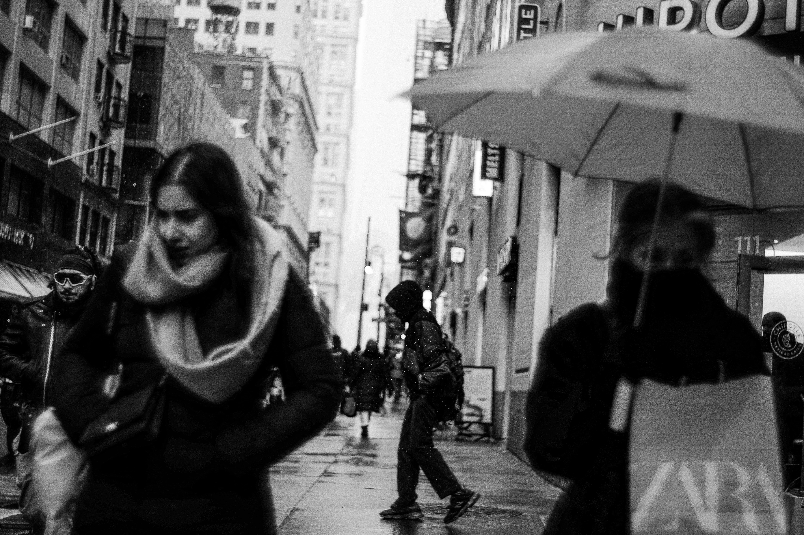
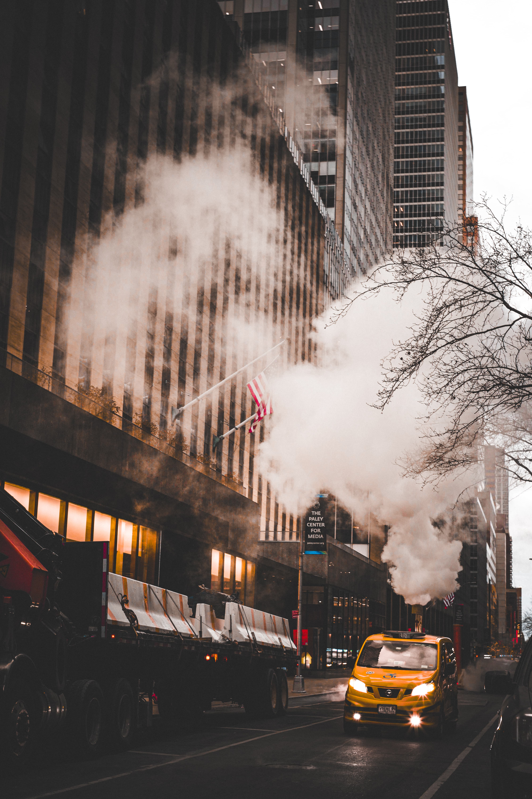
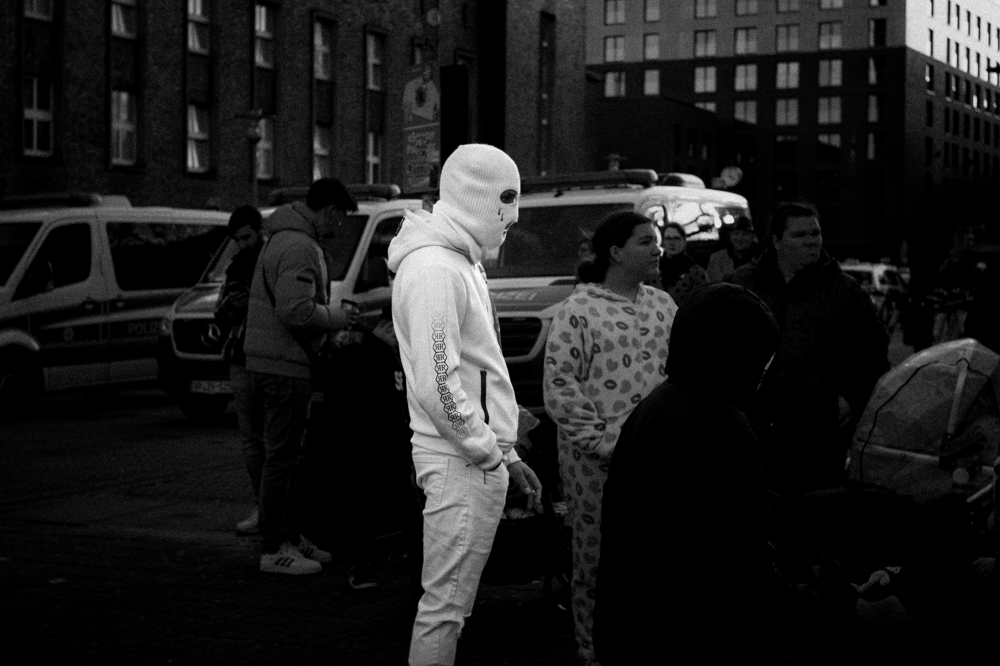
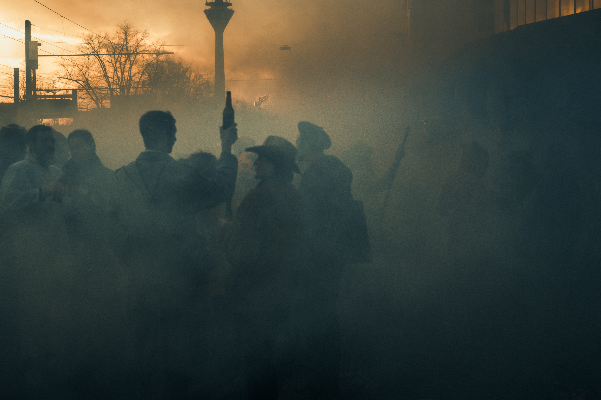
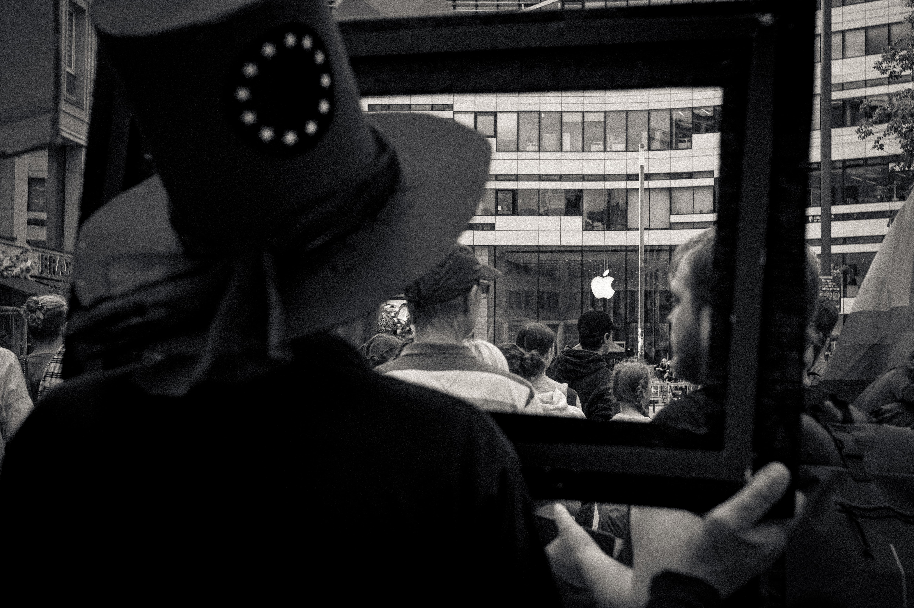
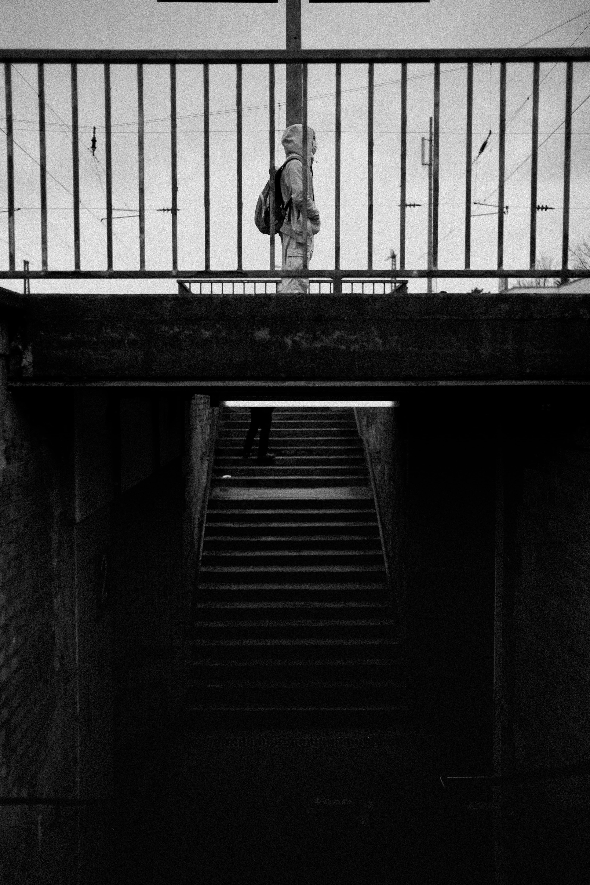
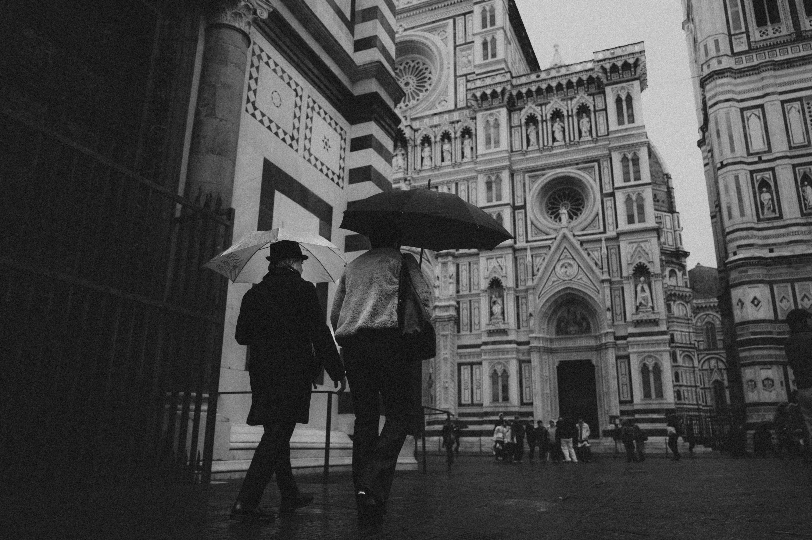

Portfolio / Street
Street
Street observations shaped by movement, distance and the rhythm of public life.













Portfolio / Street
Street observations shaped by movement, distance and the rhythm of public life.






